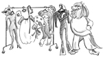
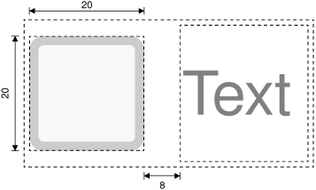
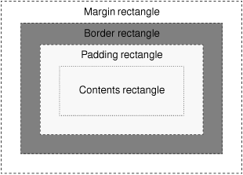
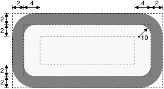
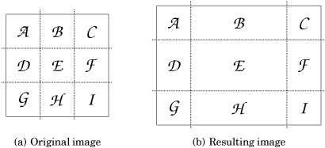
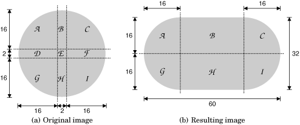
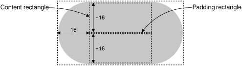
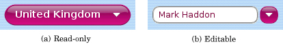
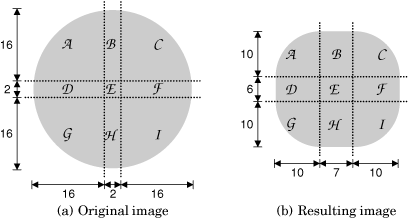
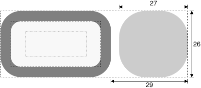

In some circumstances, we might want to change the look and feel of Qt's built-in widgets. We may only want to do some minor customizations to tweak the aesthetics slightly, or we may wish to implement an entirely new style, to give our application or suite of applications a unique and distinctive appearance. In either case, there are three main approaches to redefining the look of Qt's built-in widgets:
We can subclass the individual widget classes and reimplement their paint and mouse event handlers. This gives complete control but involves a lot of work. It also means that we must go through all of our code and Qt Designer forms and change all occurrences of Qt widget classes to use our subclasses.
We can subclass QStyle or a predefined style such as QWindowsStyle. This approach is very powerful; it is used by Qt itself to provide a native look and feel on the different platforms it supports.
Starting with Qt 4.2, we can use Qt style sheets, a mechanism inspired by HTML CSS (Cascading Style Sheets). Since style sheets are plain text files that are interpreted at run-time, no knowledge of programming is required to use them.
We have already covered the techniques required for the first approach, in Chapters 5 and 7, although our emphasis was on creating custom widgets. In this chapter, we will review the last two approaches. We will present two custom styles: the Candy style, specified as a style sheet, and the Bronze style, implemented as a QStyle subclass (see Figure 19.1). To keep the examples to a manageable size, both styles focus on a carefully chosen subset of Qt's widgets.
Qt style sheets are strongly inspired by CSS but adapted to work on widgets. A style sheet consists of style rules that affect the rendering of a widget. These rules are specified as plain text. Since style sheets are parsed at run-time, we can easily experiment with different designs by specifying a style sheet for a Qt application using the -stylesheet file.qss command-line option, by using Qt Designer's style sheet editor, or by embedding a QTextEdit inside our application during development.
Style sheets are applied on top of the currently active QStyle (e.g., QWindowsVistaStyle or QPlastiqueStyle).[*] Because creating style sheets doesn't involve any subclassing, they are ideal for minor customizations to existing widgets. For example, suppose we want to use yellow as the background color of all QLineEdits in an application. This could be accomplished using the following style sheet:
[*] Style sheets are not supported for QMacStyle in Qt 4.3. It is expected that this will be addressed in a future release.
QLineEdit {
background-color: yellow;
}In CSS-speak, QLineEdit is called a selector, background-color is an attribute, and yellow is a value.
For this kind of customization, using style sheets produces more reliable results than fiddling with the widget's palette. This is because a QPalette's entries (Base, Button, Highlight, etc.) are used differently by different styles. For example, QWindowsStyle uses the Base palette entry to fill the background of a read-only combobox, whereas QPlastiqueStyle uses the Button entry for this purpose. Furthermore, certain styles use hard-coded images to render certain elements, by-passing the palette entirely. In contrast, style sheets guarantee that no matter which QStyle is active, the colors specified will be the ones used.
QApplication::setStyleSheet() sets a style sheet for the entire application:
qApp->setStyleSheet("QLineEdit { background-color: yellow; }");We can also set a style sheet on a widget and its children using QWidget::setStyleSheet(). For example:
dialog->setStyleSheet("QLineEdit { background-color: yellow; }");If we set the style sheet directly on a QLineEdit, we can omit both the QLineEdit selector and the braces:
lineEdit->setStyleSheet("background-color: yellow;");So far, we have set only a single property on a single class of widget. In practice, style rules are often combined. For example, the following rule sets the foreground and background colors of six widget classes and their subclasses:
QCheckBox, QComboBox, QLineEdit, QListView, QRadioButton, QSpinBox {
color: #050505;
background-color: yellow;
}Colors can be specified by name, by an HTML-style string in #RRGGBB format, or by an RGB or RGBA value:
QLineEdit {
color: rgb(0, 88, 152);
background-color: rgba(97%, 80%, 9%, 50%);
}When using color names, we can use any name that is recognized by the QColor::setNamedColor() function. For RGB, we must specify a red, a green, and a blue component, each on a scale of 0 to 255 or 0% to 100%. RGBA additionally lets us specify an alpha value as the fourth component of the color, which corresponds to the color's opacity. Instead of a uniform color, we can also specify a palette entry or a gradient:
QLineEdit {
color: palette(Base);
background-color: qlineargradient(x1: 0, y1: 0, x2: 1, y2: 1,
stop: 0 white, stop: 0.4 gray,
stop: 1 green);
}The three types of gradients described in Chapter 8 (p. 184) are available as qlineargradient(), qradialgradient(), and qconicalgradient(). The syntax is explained in the style sheet reference documentation.
Using the background-image property, we can specify an image for the background:
QLineEdit {
color: rgb(0, 88, 152);
background-image: url(:/images/yellow-bg.png);
}By default, the background image is rooted in the top-left corner of the widget (excluding any margin specified using margin) and is repeated horizontally and vertically to fill the entire widget. This can be configured using the background-position and background-repeat attributes. For example:
QLineEdit {
background-image: url(:/images/yellow-bg.png);
background-position: top right;
background-repeat: repeat-y;
}If we specify both a background image and a background color, the background color will shine through the semi-transparent areas of the image.
So far, all of the selectors we have used have been class names. There are several other selectors that we can use; they are listed in Figure 19.2. For example, if we want to use specific foreground colors for OK and Cancel buttons, we can write
| Selector | Example | Matched Widgets |
|---|---|---|
| Universal | * | Any widget |
| Type | QDial | Instances of a given class, including subclasses |
| Class | .QDial | Instances of a given class, excluding subclasses |
| ID | QDial#ageDial | Widgets with the given object name |
| Qt property | QDial[y="0"] | Widgets with certain properties set to given values |
| Child | QFrame > QDial | Widgets that are direct children of the given widgets |
| Descendant | QFrame QDial | Widgets that are descendants of the given widgets |
QPushButton[text="OK"] {
color: green;
}
QPushButton[text="Cancel"] {
color: red;
}This selector syntax works for any Qt property, although we must bear in mind that style sheets don't notice when a property changes behind their back. Selectors can also be combined in various ways; for example, to select all QPushButtons called "okButton" whose x and y properties are 0 and that are direct children of a QFrame called "frame", we can write
QFrame#frame > QPushButton[x="0"][y="0"]#okButton {
...
}In an application that presents large forms with lots of line editors and comboboxes, such as those used by various bureaucracies, it is common to use a yellow background color for mandatory fields. Let's suppose that we want to apply this convention to our application. First, we would start with this style sheet:
*[mandatoryField="true"] {
background-color: yellow;
}Although there is no mandatoryField property defined anywhere in Qt, we can easily create one by calling QObject::setProperty(). Starting with Qt 4.2, setting the value of a non-existent property dynamically creates that property. For example:
nameLineEdit->setProperty("mandatoryField", true);
genderComboBox->setProperty("mandatoryField", true);
ageSpinBox->setProperty("mandatoryField", true);Style sheets are not only useful for controlling colors. They also let us perform various adjustments to the size and position of widget elements. For example, the following rules can be used to increase the size of checkboxes and radio button indicators to 20 x 20 pixels, and ensure that there are 8 pixels between the indicator and the associated text:
QCheckBox::indicator, QRadioButton::indicator {
width: 20px;
height: 20px;
}
QCheckBox, QRadioButton {
spacing: 8px;
}Notice the selector syntax for the first rule. Had we written only QCheckBox instead of QCheckBox::indicator, we would have specified the dimensions of the entire widget instead of those of the indicator. The first rule is illustrated in Figure 19.3.

Subcontrols such as ::indicator can be styled in much the same way as widgets. Figure 19.4 lists some of the subcontrols supported by Qt.
| Subcontrol | Description |
|---|---|
| ::indicator | A checkbox, radio button, checkable menu item, or checkable group box's indicator |
| ::menu-indicator | A push button's menu indicator |
| ::item | A menu, menu bar, or status bar item |
| ::up-button | A spin box or scroll bar's up button |
| ::down-button | A spin box or scroll bar's down button |
| ::up-arrow | A spin box, scroll bar, or header view's up arrow |
| ::down-arrow | A spin box, scroll bar, header view, or combobox's down arrow |
| ::drop-down | A combobox's drop-down arrow |
| ::title | A group box's title |
In addition to subcontrols, a style sheet can refer to specific widget states. For example, we may want to render the checkbox's text in white when the mouse hovers over it by specifying the :hover state:
QCheckBox:hover {
color: white;
}States are signified by using a single colon, whereas subcontrols are signified by using two colons. We can list several states one after another, each separated by a colon. In such cases, the rule will apply only when the widget is in all the specified states. For example, the following rule is applied only if the mouse is hovering over a checked checkbox:
QCheckBox:checked:hover {
color: white;
}If we want the rule to apply when any of the states is true, we can use multiple selectors, using commas to separate them:
QCheckBox:hover, QCheckBox:checked {
color: white;
}Logical negation is achieved by using an exclamation mark:
QCheckBox:!checked {
color: blue;
}States can be combined with subcontrols:
QComboBox::drop-down:hover {
image: url(:/images/downarrow_bright.png);
}Figure 19.5 lists the style sheet states that are available.
| State | Description |
|---|---|
| :disabled | The widget is disabled |
| :enabled | The widget is enabled |
| :focus | The widget has input focus |
| :hover | The mouse is hovering over the widget |
| :pressed | The widget is being pressed using the mouse |
| :checked | The button is checked |
| :unchecked | The button is unchecked |
| :indeterminate | The button is partially checked |
| :open | The widget is in an open or expanded state |
| :closed | The widget is in a closed or collapsed state |
| :on | The widget is "on" |
| :off | The widget is "off" |
Style sheets can also be used together with other techniques to perform more complex customizations. For example, suppose we want to position a tiny "erase" button inside a QLineEdit's frame, to the right of the QLineEdit's text. This involves creating an EraseButton class, and placing it on top of the QLineEdit (e.g., using layouts), but also reserving some space for the button, so that the typed-in text cannot collide with the erase button. Doing this by subclassing QStyle would be inconvenient, because we would have to subclass every style in Qt that might be used by the application (QWindowsVistaStyle, QPlastiqueStyle, etc.). Using style sheets, the following rule does the trick:
QLineEdit {
padding: 0px 15px 0px 0px;
}The padding property lets us specify the top, right, bottom, and left padding of the widget. The padding is inserted between the QLineEdit's text and its frame. For convenience, CSS also defines padding-top, padding-right, padding-bottom, and padding-left, for when we want to set only one padding value. For example:
QLineEdit {
padding-right: 15px;
}Like most Qt widgets that are customizable using style sheets, QLineEdit supports the box model depicted in Figure 19.6. This model specifies four rectangles that affect the layout and rendering of a styled widget:
The border rectangle encloses the padding rectangle. It reserves space for the border.

For a plain widget with no padding, no border, and no margin, the four rectangles coincide exactly.
We will now present a style sheet that implements a custom style called Candy. Figure 19.7 shows a selection of Candy-styled widgets. The Candy style defines a custom look and feel for QLineEdits, QListViews, QPushButtons, and QComboBoxes, using the box model presented in Figure 19.6. We will present the style sheet piece by piece; the entire style sheet is available as qss/candy.qss in the Candy example's directory supplied with the book's examples.
The widgets are used in the dialog shown in Figure 19.1. The dialog itself has a background image set by the following rule:
QDialog {
background-image: url(:/images/background.png); [R1]
}The following rule sets the color and font attributes for QLabels:
QLabel {
font: 9pt;
color: rgb(0, 0, 127); [R2]
}The next rule defines the look of the dialog's QLineEdit and of its QListView:
QLineEdit,
QListView {
color: rgb(127, 0, 63);
background-color: rgb(255, 255, 241);
selection-color: white; [R3]
selection-background-color: rgb(191, 31, 127);
border: 2px groove gray;
border-radius: 10px;
padding: 2px 4px;
}To make the QLineEdit and QListView really stand out, we have specified custom foreground and background colors for normal and selected text. In addition, we have specified a gray 2-pixel-wide "grooved" border with the border attribute. Instead of using border, we could have set border-width, border-style, and border-color individually. We can round a border's corners by specifying a border-radius, and we have done so here using a radius of 10 pixels. Figure 19.8 provides a schematic representation of the effects of our changes to the widgets' border and padding attributes. To ensure that the widget's contents don't collide with the border's rounded corners, we specify an internal padding of 2 pixels vertically and 4 pixels horizontally. For QListViews, the vertical padding doesn't look quite right, so we override it as follows:
QListView {
padding: 5px 4px; [R4]
}
When an attribute is set by several rules that have the same selector, the last rule is the one that is applied.
For styling QPushButtons, we will use a completely different approach. Instead of drawing the button using style sheet rules, we will use a ready-made image as the background. Also, to make the button scalable, the button background is defined using the CSS border image mechanism.
Unlike a background image specified using background-image, a border image is cut into a 3 x 3 grid, as shown in Figure 19.9. When filling the background of a widget, the four corners (cells A, C, G, and I in the diagram) are taken as is, whereas the other five cells are stretched, or tiled, to fill the available space.

Border images are specified using the border-image property, which requires us to specify an image file name and the four "cuts" that define the nine cells. The cuts are defined as pixel distances from the top, right, bottom, and left edges. A border.png border image with cuts at 4, 8, 12, and 16 pixels from the top, right, bottom, and left edges would be specified as
border-image: url(border.png) 4 8 12 16;
When using a border image, we must also set the border-width attribute explicitly. Normally, border-width should correspond to where the cuts fall; otherwise, the corner cells will be stretched or shrunk to fit the border-width. For the border.png example, we would specify the border widths as follows:
border-width: 4px 8px 12px 16px;
Now that we know how the border image mechanism works, let us see how it is used for styling Candy QPushButtons. Here are the rules that define how push buttons are rendered in their normal state:
QPushButton {
color: white;
font: bold 10pt;
border-image: url(:/images/button.png) 16;
border-width: 16px; [R5]
padding: -16px 0px;
min-height: 32px;
min-width: 60px;
}In the Candy style sheet, the four cuts for a QPushButton's border image are located at 16 pixels from the edges of a 34 x 34 pixel border image, as shown in Figure 19.10 (a). Because the four cuts are uniform, we only need to write "16" for the cuts and "16px" for the border width.
In the QPushButton example shown in Figure 19.10 (b), the border image cells corresponding to D, E, and F were dropped because the resized button was not tall enough to need them, and cells B and H were horizontally stretched to occupy the extra width.

The standard use of a border image is to provide a border around a widget, with the widget inside the border. But we have subverted the border image mechanism and used it to create the background of the widget itself. As a result, cell E has been dropped, and the padding rectangle has height 0. To make some room for the push button's text, we specify a vertical padding of -16 pixels. Figure 19.11 illustrates the situation. If we had used the border image mechanism to define an actual border, we probably wouldn't want the text to collide with it—but because we are using it to create a scalable background, we want the text to go on top of it rather than inside it.

Using min-width and min-height, we set the minimum size of the push button's contents. The values chosen here ensure that there is enough room for the border image corners and that an OK button is made a bit wider than necessary, to make it look better next to the Cancel button.
The preceding QPushButton rules apply to all push buttons. We will now define a few extra rules that apply only when buttons are in certain states.
QPushButton:hover {
border-image: url(:/images/button-hover.png) 16; [R6]
}When the mouse pointer hovers over a QPushButton, the :hover state evaluates to true and the specified rule overrides any other rule that has a less specific selector. Here, we use this technique to specify a slightly brighter image as the border image, to obtain a nice hover effect. The other QPushButton attributes that were specified earlier continue to apply; only the border-image attribute changes.
QPushButton:pressed {
color: lightgray;
border-image: url(:/images/button-pressed.png) 16; [R7]
padding-top: -15px;
padding-bottom: -17px;
}When the user presses a push button, we change the foreground color to light gray, we use a darker border image, and we move the push button's text down one pixel by tweaking the padding.
Our final style rules will customize the appearance of QComboBoxes. To show off the control and precision we can achieve using style sheets, we will distinguish between read-only and editable comboboxes, as Figure 19.12 shows. Read-only comboboxes are rendered as a QPushButton with a down arrow on the right, whereas editable comboboxes are made up of a QLineEdit-like component and of a small rounded button. It turns out that we can reuse most of the rules that we have already defined for QLineEdits, QListViews, and QPushButtons.

The rule that defines the look of a QLineEdit can be used to style editable comboboxes:
QComboBox:editable, QLineEdit, QListView { color: rgb(127, 0, 63); background-color: rgb(255, 255, 241); selection-color: white; [R3´] selection-background-color: rgb(191, 31, 127); border: 2px groove gray; border-radius: 10px; padding: 2px 4px; }
The rules that define the look of a QPushButton in its normal state can be extended to apply to read-only comboboxes:
QComboBox:!editable, QPushButton { color: white; font: bold 10pt; border-image: url(:/images/button.png) 16; [R5´] border-width: 16px; padding: -16px 0px; min-height: 32px; min-width: 60px; }
Hovering over a read-only combobox or over the drop-down button of an editable combobox should change the background image, just like it already does for QPushButton:
QComboBox:!editable:hover, QComboBox::drop-down:editable:hover, QPushButton:hover { border-image: url(:/images/button-hover.png) 16; [R6´] }
Pressing a read-only combobox is like pressing a QPushButton:
QComboBox:!editable:on, QPushButton:pressed { color: lightgray; border-image: url(:/images/button-pressed.png) 16; [R7´] padding-top: -15px; padding-bottom: -17px; }
Reusing rules R3, R5, R6, and R7 saves time and helps keep our styling consistent. But we have not defined any rules that will draw the drop-down buttons, so we will create these now.
QComboBox::down-arrow {
image: url(:/images/down-arrow.png); [R8]
}We provide our own down arrow image so that it is a bit larger than the standard arrow.
QComboBox::down-arrow:on {
top: 1px; [R9]
}If the combobox is open, the down arrow is moved down one pixel.
QComboBox * {
font: 9pt; [R10]
}When the user clicks a combobox, it displays a list of items. Rule R10 ensures that the combobox's pop-up (or any other child widget) doesn't inherit the larger font size that applies to the combobox by rule R5´.
QComboBox::drop-down:!editable {
subcontrol-origin: padding;
subcontrol-position: center right;
width: 11px; [R11]
height: 6px;
background: none;
}Using the subcontrol-origin and subcontrol-position attributes, we position the drop-down arrow vertically centered on the right-hand side of the padding rectangle used by read-only comboboxes. In addition, we also set its size to correspond to the size of the button's contents, the 11 x 6 pixel down-arrow.png image, and we disable its background because our drop-down button only consists of the drop-down arrow.
QComboBox:!editable {
padding-right: 15px; [R12]
}For read-only comboboxes, we specify a right padding of 15 pixels to ensure that the text shown in the combobox doesn't overlap with the drop-down arrow. Figure 19.13 shows how these dimensions interact with each other.
For editable comboboxes, we need to configure the drop-down button so that it looks like a tiny QPushButton:
QComboBox::drop-down:editable {
border-image: url(:/images/button.png) 16;
border-width: 10px;
subcontrol-origin: margin;
subcontrol-position: center right; [R13]
width: 7px;
height: 6px;
}We specify button.png as the border image. However, this time, we specify a border width of 10 pixels instead of 16, to scale the image down a bit, and specify a fixed size of the contents of 7 pixels horizontally and 6 pixels vertically. Figure 19.14 shows a schematic of what we have done.

If the combobox is open, we use a different, darker image for the drop-down button:
QComboBox::drop-down:editable:open {
border-image: url(:/images/button-pressed.png) 16; [R14]
}For editable comboboxes, we specify a right margin of 29 pixels to provide space for the drop-down button, as shown on Figure 19.15:
QComboBox:editable {
margin-right: 29px; [R15]
}
We have now finished creating our Candy style sheet. The style sheet is about 100 lines long, and makes use of a few custom images. The result is a highly distinctive dialog.
Creating a custom style using style sheets can involve quite a lot of trial and error, especially for those who have not used CSS before. One of the main challenges with style sheets is that CSS conflict resolution and cascading don't always give intuitive results. For further details, see the online documentation at http://doc.trolltech.com/4.3/stylesheet.html. This describes Qt's style sheet support and provides links to the CSS specification.